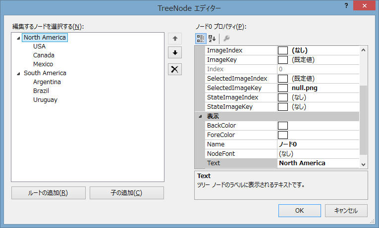
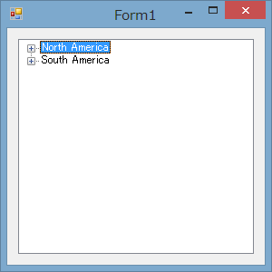
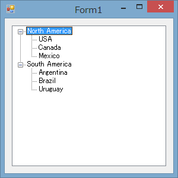

| 評価環境： OS: Windows8 64bit コンパイラ： Visual Studio 2012 Update2、 C#、 .NET 4 |
最初にシンプルなTreeViewアプリを作成します。
Formアプリケーションとして新規にプロジェクトを作成し、画面上に TreeView
をドロップ（？ドラック）します。
で、適当にNodeを編集して以下のように作成。

これを[F5]実行すると数の通り。

んー、プログラム起動時点からTreeViewをすべて開いてほしいので、プログラム起動時に treeview1.ExpandAll() を追加。
|
[F5]実行するとこんな感じ。

| 評価環境： OS: Windows8 64bit コンパイラ： Visual Studio 2012 Update2、 C#、 .NET 4 |
参考URL：
C#なら簡単 TreeViewのアイテムのアイコンを変更する | 鳩でもわかるC#（Ｃ＃） (lets-csharp.com)
3-1.
参考URL：
http://clikington-saito.com/CheckedTreeView/TreeView.html
3-2. 3ステート CheckBox
参考URL：
http://dobon.net/vb/dotnet/control/tvlabeledit.html
記載： 2013年05月06日 木下英俊